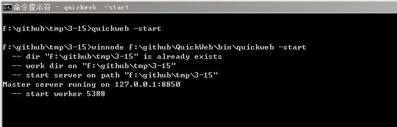

创建第一个简单的应用
QuickWeb应用的目录结构
在创建QuickWeb应用之前，先介绍一下基于QuickWeb的应用目录结构：
config.js ---------------- [服务器配置文件]
app ---------------------- [应用目录]
+- test_app ------------- [应用test_app目录]
+ +-- config.js ------- [应用配置文件]
+ +-- route.txt ------- [应用路由表]
+ +-- code ------------ [应用处理程序目录]
+ +-- html ------------ [应用静态资源文件目录]
+ +-- tpl ------------- [应用模板目录]
+- blog ----------------- [应用blog目录]
+-- config.js
+-- route.txt
+-- code
+-- html
+-- tpl
创建应用
使用QuickWeb命令行工具可以很方便地创建以上的目录结构。例如：
要将QuickWeb服务器创建到/server目录，先执行cd /server进入该目录，
并执行quickweb -init即自动创建了一个名为app的目录及默认的
服务器配置文件config.js
接着，创建一个应用：
执行cd app进入应用目录，创建一个目录：mkdir test_app，然后执行
quickweb -init-app test_app初始化应用：这时会在test_app目录创建了
code，html，tpl这三个目录，以及默认的应用配置文件config.js及
路由表route.txt。
现在，启动QuickWeb服务器试试：
返回/server目录：cd /server，执行quickweb -start即可启动服务器。

QuickWeb服务器在启动完毕后，默认是不会自动载入刚才创建的应用的，需要登录 到服务器管理界面来手动载入该应用：
在浏览器中打开https://127.0.0.1:8850
此时弹出一个登录窗口，输入用户名：admin，密码：admin，点“确定”

进入服务器管理界面后，点左边导航栏中的“应用”，并在右边出现的应用列表中， 点”test_app“一栏的”载入“按钮，即可载入该应用。

在浏览器中打开http://127.0.0.1:8080， 此时会看到一个页面，显示当前时间：

命令行工具说明
初始化服务器配置：quickweb -init
每一个QuickWeb应用都是运行于QuickWeb应用服务器上的，因此在创建应用前，需要先创建一个 服务器配置。执行此命令会创建一个app目录及默认的配置文件config.js。
具体用法：
quickweb -init在当前目录初始化服务器配置quickweb -init [path]在指定目录初始化服务器配置
初始化应用配置：quickweb -init-app
每个QuickWeb应用需要放置到QuickWeb服务器的app目录里面，在启动QuickWeb服务器后，执行载入 应用操作，该应用才会被加载。执行此命令会创一个基本的应用所需要的所有文件。
具体用法：
quickweb -init-app在当前目录创建一个默认的应用quickweb -init-app [path]在指定目录创建一个默认的应用
更新应用的路由信息文件：quickweb -update-route
在应用的code目录或html目录增删文件之后，需要执行此命令来更新路由文件，否则新增的文件 不会被正确加载。
具体用法：
quickweb -update-route更新当前目录的应用的路由信息文件quickweb -update-route [path]更新指定目录的应用的路由信息文件
更新静态资源文件的Gzip压缩副本：quickweb -update-compress
对于静态资源文件，当开启了Gzip压缩传输之后，且客户端浏览器支持Gzip压缩传输，则QuickWeb会发送 经过Gzip压缩后的文件内容。为了减少压缩文件时的CPU压力，QuickWeb采用了将文件压缩好，在传送时直接 发送已经压缩好的文件。因此，在对html目录里面的文件进行修改后，需要执行此命令来更新GZip压缩 副本，否则客户端不会得到更新后的文件。
在开发环境下，可直接删除html目录里面的.gzip目录，以取消静态文件的Gzip传输方式。
具体用法：
quickweb -update-compress更新当前目录的应用的静态资源文件Gzip压缩副本quickweb -update-compress [path]更新指定目录的应用的静态资源文件Gzip压缩副本
开发QuickWeb应用的一般步骤
初始化服务器配置
quickweb -init在app目录为应用创建一个目录，并在该目录下执行初始化应用配置
mkdir app/testquickweb -init-app app/test
在html目录为应用添加资源文件，在code目录为编写程序
更新应用的路由信息文件
quickweb -update-route app/test启动服务器
quickweb -start进入服务器后台，载入该应用 https://127.0.0.1:8850
打开页面查看效果 http://127.0.0.1:8080
调试QuickWeb应用的一般步骤
如果html目录或code目录的文件有增删，先更新路由信息文件
quickweb -update-route app/test也可以在服务器后台的
应用选项中点更新路由表按钮
在服务器后台的
进程选项中，只保留一个Worker进程，点重启按钮即可重新加载应用
应用上线的一般步骤
创建静态资源文件的Gzip压缩副本
quickweb -update-compress app/test也可以在服务器后台的
应用选项中点更新压缩文件按钮